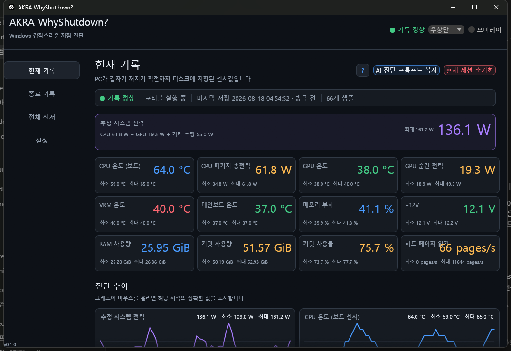

평상시 센서 기록
창을 닫아도 Windows 서비스가 핵심 센서 값을 CSV에 계속 기록합니다.
WINDOWS POWER-LOSS DIAGNOSTICS
CPU·GPU·VRM·전압·메모리 상태를 지속적으로 기록합니다. PC가 예기치 않게 꺼진 뒤에도 종료 직전의 상태를 한 화면에서 확인하고, 필요한 정보를 AI 진단용 프롬프트로 복사할 수 있습니다.

1초기본 기록 간격
20분종료 직전 기록 보존
로컬이 PC에만 저장
AI진단 프롬프트 복사
HOW IT WORKS
창을 닫아도 Windows 서비스가 핵심 센서 값을 CSV에 계속 기록합니다.
예기치 않은 종료로 기록이 정상 종료되지 않아도, 종료 직전 데이터와 관련 기록을 다음 부팅까지 보존합니다.
온도·전력·제한 신호와 Windows 이벤트를 같은 시간대에 함께 확인합니다.
AI-ASSISTED REVIEW
종료 기록을 선택하고 AI 진단 프롬프트 복사를 누르세요. PC 사양, Windows 이벤트, 마지막 센서 값을 한 번에 붙여넣을 수 있는 진단 요청문이 만들어집니다.
종료 기록 선택분석할 종료 시점을 고릅니다.
프롬프트 복사진단에 필요한 내용만 모읍니다.
AI 서비스에 붙여넣기결론·근거·다음 점검 순서로 답변을 받을 수 있습니다.
앱이 AI를 직접 실행하거나 데이터를 자동으로 전송하지 않습니다. 복사한 내용은 사용자가 확인한 뒤 원하는 AI 서비스에 붙여넣습니다.
결론
전원 공급 경로를 먼저 점검해 보세요. 확신도 · 중간실제 답변은 기록에 따라 달라집니다.
WHAT IT RECORDS
온도, 순간 전력, 사용률, 클럭과 온도·전력 제한 신호
지원되는 시스템의 VRM·칩셋 온도, 팬 회전수와 12V·5V·3.3V
마지막 센서값, Windows 이벤트와 센서별 최솟값·최댓값 요약
사용자명·호스트명·일련번호를 수집하지 않고, 이 PC의 ProgramData 폴더에만 저장
SCREEN DETAILS
현재값과 범위를 먼저 확인한 뒤, 그래프에서 종료 직전의 급격한 변화를 정확한 시각과 함께 살펴볼 수 있습니다.
INSTALL
다운로드한 ZIP의 압축을 풀고, 해당 폴더에서 관리자 권한 PowerShell을 연 뒤 아래 명령을 실행하세요. 기록 서비스와 Windows 앱이 함께 설치됩니다.
PS> .\AKRA-WhyShutdown-windows-x64\scripts\install.ps1
VERIFIED DOWNLOAD
release.json에서 확인배포 파일에는 아직 코드 서명이 없어 Windows SmartScreen 경고가 표시될 수 있습니다. 체크섬으로 파일 무결성을 확인한 뒤 실행하세요. 이 도구는 PSU의 순간적인 전기 신호를 직접 측정하거나 고장 원인을 자동으로 확정하지 않습니다.